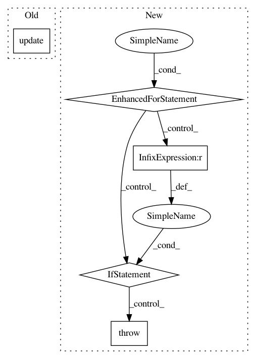

9e63f7ccc3abfc73afa7ac4dc9864d6066696679,python/ray/autoscaler/_private/kubernetes/node_provider.py,KubernetesNodeProvider,set_node_tags,#KubernetesNodeProvider#Any#Any#,74
Before Change
def set_node_tags(self, node_id, tags):
pod = core_api().read_namespaced_pod(node_id, self.namespace)
pod.metadata.labels.update(tags)
core_api().patch_namespaced_pod(node_id, self.namespace, pod)
def create_node(self, node_config, tags, count):
conf = node_config.copy()
After Change
return super().get_node_id(ip_address, use_internal_ip=use_internal_ip)
def set_node_tags(self, node_ids, tags):
for _ in range(MAX_TAG_RETRIES - 1):
try:
self._set_node_tags(node_ids, tags)
return
except ApiException as e:
if e.status == 409:
logger.info(log_prefix + "Caught a 409 error while setting"
" node tags. Retrying...")
time.sleep(DELAY_BEFORE_TAG_RETRY)
continue
else:
raise
// One more try
self._set_node_tags(node_ids, tags)
def _set_node_tags(self, node_id, tags):
pod = core_api().read_namespaced_pod(node_id, self.namespace)
In pattern: SUPERPATTERN
Frequency: 3
Non-data size: 5
Instances
Project Name: ray-project/ray
Commit Name: 9e63f7ccc3abfc73afa7ac4dc9864d6066696679
Time: 2020-10-28
Author: 62982571+Gekho457@users.noreply.github.com
File Name: python/ray/autoscaler/_private/kubernetes/node_provider.py
Class Name: KubernetesNodeProvider
Method Name: set_node_tags
Project Name: keras-team/keras
Commit Name: 4d7ff76cfbaf5fb8a57d8f3232c989e8e2c2f5b5
Time: 2016-04-01
Author: francois.chollet@gmail.com
File Name: keras/wrappers/scikit_learn.py
Class Name: KerasClassifier
Method Name: score
Project Name: ray-project/ray
Commit Name: b796de41049aa3b3696a6b7242799284c3f0c641
Time: 2021-01-20
Author: ed.nmi.oakes@gmail.com
File Name: python/ray/util/metrics.py
Class Name: Metric
Method Name: record